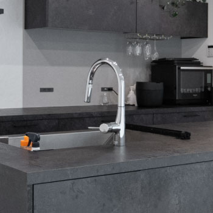
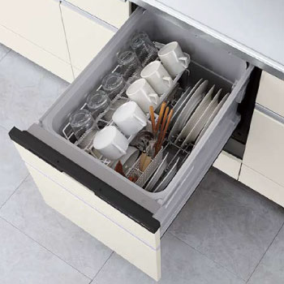
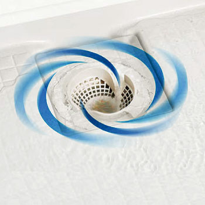
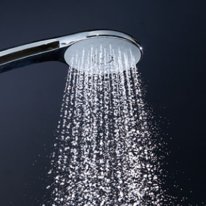
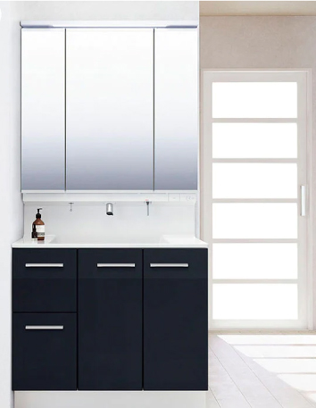
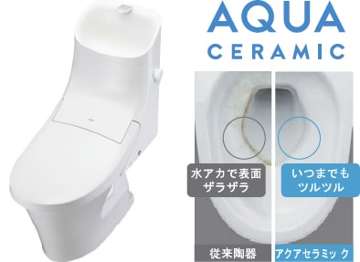

-
システムキッチン
食洗器、タッチレス水栓等を標準で備えた、
毎日の料理をサポートする暮らし。 -
※イメージ
-

Wサポートシンク
2つのレーンとシンクサポートを組み合わせて調理も後片付けもダブルでサポートするシンクを採用。下ごしらえから後片付けまで、面倒な作業がラクにはかどります。
-

タッチレス水栓
毎日忙しいあなたをスピーディにサポートするストレスフリーな操作性。汚れた手で触ることがないので、清潔に保てます。
-

キャビネット
鍋やフライパン、調味料に小物など大小さまざまな物を用途に分けてスッキリ収納。扉を勢いよく閉めても減速して静かに閉まるソフトモーションレール。
-

食洗器
50℃以上の高圧水流により、粗い・すずぎの各洗浄工程で除菌が完了するストリーム除菌洗浄機能を搭載。スイッチ一つで清潔な食器洗い！
-
システムキッチン
1日の心と身体の疲れを癒すバスルーム
-

サーモバスS
浴槽とフタの両方に保温構造を採用することで、なんと、4時間後でも湯温低下が2.5℃以下の優れもの！お湯が冷めづらく、追いだきの回数もグッと減らせるので節約にもつながります。
-

キレイサーモフロア
渦のチカラで、ゴミをまとめて捨てやすい排水口。シャワーなどの排水時に渦を起こして、髪の毛やゴミをヘアキャッチャーの中央にまとめます。
-

エコアクアシャワー
ボリュームのある浴び心地と節水を両立。散水版の穴の大きさや位置の調節と、水滴にたっぷりの空気を膨らませることで、従来のシャワーに比べ、約35%の節水効果を実現。
-

まる洗いカウンター
ワンアクションで折りたたみ。カウンターをまる洗いできるから、裏までピカピカに。洗いにくい壁や床もラクな姿勢で洗うことができます。
-
シャンプードレッサー
使い勝手からお掃除まで家族みんなに
うれしい機能が満載！ -

- 
-

-
キレイアップカウンター
バックガードがミラー下まであるキレイアップカウンターはつなぎ目がないので、飛び散った水滴をサッと拭き取れます。洗面器容量は16Lの大容量です。

A.新てまなし排水口／金属フランジがなく、なめらかな形状で、しかも排水口の奥の突起がなくてお掃除簡単。B.エコハンドル／お湯の無駄遣いを防止する、よく使う正面のハンドル位置で「水」を出す省エネ設計。C.キレイアップ水栓／上から水が出るキレイアップ水栓は、水栓まわりに水がたまりにくいのでお掃除簡単です。
-
シャワートイレ
お掃除しやすい素材と機能に
こだわったシャワートイレ
- 
-
アクアセラミック
リング状の黒ずみや便器のくすみの原因となる水アカが固定しません。